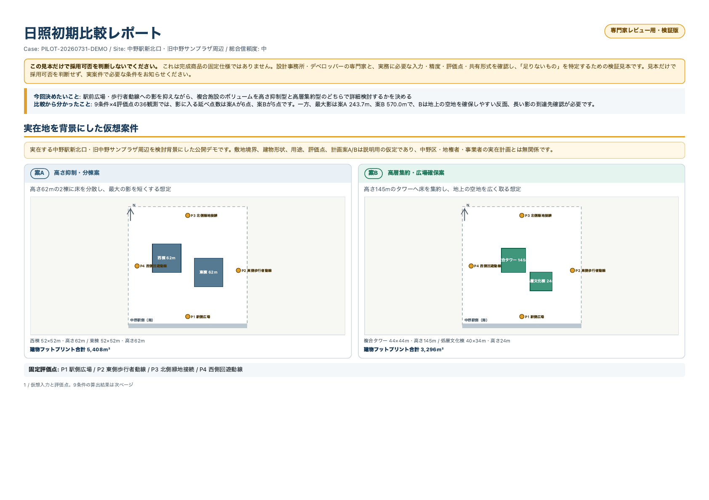

同条件のA/B比較
1敷地・計画案A/Bを、冬至・中間期・夏至の3季節×午前・正午・午後の3時間帯で比較します。
設計事務所・デベロッパーの初期検討向けに、1敷地の計画案2案を3季節×3時間帯で比較し、次の検討へ進むための判断材料を共有用PDFにまとめます。見本は中野駅新北口・旧中野サンプラザ周辺を背景にした、実在計画とは無関係な仮想2案です。

相談はサービスの採用や契約を意味しません。GitHub Issueは公開されます。公開できる一般的な不足条件はGitHubへ、実案件の概要はXのDMへお知らせください。どちらにも、会社名・住所・図面・契約情報などの機密情報を添付しないでください。
想定している方：設計事務所の建築士・都市設計担当、デベロッパーの開発企画・設計監理・プロジェクト責任者です。実務担当者の評価と、案件予算を判断する責任者の両方の意見を確認します。
見本案件は、中野駅新北口・旧中野サンプラザ周辺で、複合施設を「高さ62mの2棟へ分ける案A」と「高さ145mのタワーへ集約する案B」にした仮定です。案Aと案Bの敷地境界・用途・建物形状・評価点は説明用で、実在計画とは無関係です。
「1敷地・2案・3季節×3時間帯」は検証を始めるための基準範囲で、完成商品の固定仕様ではありません。実際には、何を決めたいかを確認してから、必要な入力、評価点、条件、共有形式を合意します。
1敷地・計画案A/Bを、冬至・中間期・夏至の3季節×午前・正午・午後の3時間帯で比較します。
各条件の影響差、確認できたこと、次に現地や専門ソフトで確かめるべきことを、ヒアリングした判断目的に合わせて整理します。
比較結果に加え、データ出典・欠損・除外条件、使用した版を明記し、社内で共有できる形にします。
このパイロットは、設計初期の概算スクリーニングです。正式な日影図、建築確認や条例への法規判定、測量、年間日照時間の算定、年間発電量の算定・保証は行いません。最終判断には、現地確認、建築士などの専門家、用途に合う専用ソフトを併用してください。
相談しただけで契約になることはありません。現在公開中の基本シミュレーションは、引き続き登録不要・無料で利用できます。
いいえ。これは必要条件を聞き出すための検証見本です。実案件の目的・入力・許容精度を確認せず、採用を求めるものではありません。
はい。現在使っている図面・ソフト・外注と、どの判断に時間がかかるかを機密情報なしで伺い、確認項目を一緒に整理します。
いいえ。意見提供だけでも構いません。対応可能な案件に限り、範囲・納期・費用を別途提示し、合意前に作業や請求は行いません。
「この値がないと比較できない」「社内説明には別の図が必要」「この精度なら使える」という意見から受け付けています。実案件の相談でなくても構いません。
GitHub Issueは公開されます。氏名、会社名、連絡先、住所、図面、顧客情報、未公開URLなどは記載しないでください。